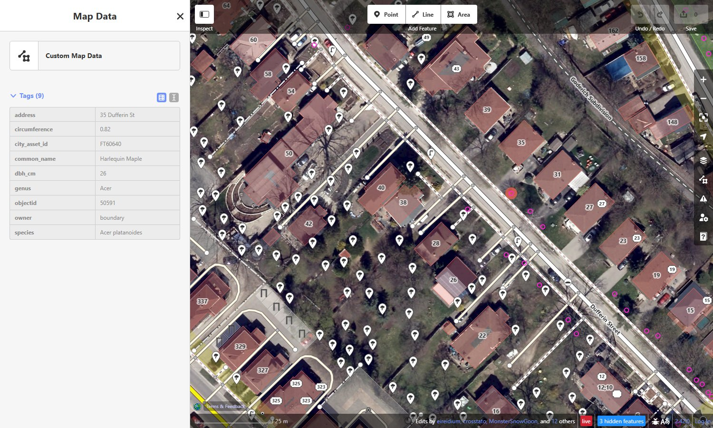
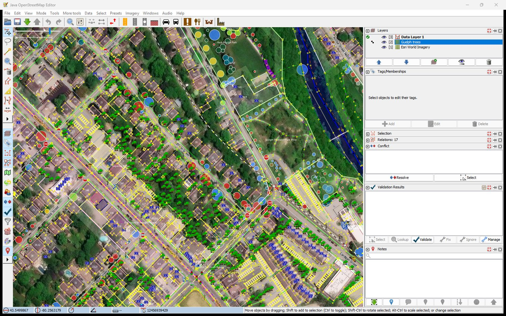

Guelph Trees
A reference layer of the street and park trees in the City of Guelph's inventory — 42,994 City- and boundary-owned trees with their genus, species and trunk diameter — ready to add to the OpenStreetMap editors iD and JOSM while you map.
Before you copy anything: importing individual trees is
contested in OpenStreetMap, and copying species and girth off this overlay
tree by tree is, in effect, an attribute import. Use it as a reference: add
a tree you can see on imagery, give it a species you have verified, and do
not bulk-copy. The City's licence is compatible with OSM (the OSMF Licence
Working Group approved it on 2024-09-09), but compatibility is not
community consensus.
Preview
- Maple Acer
- Spruce Picea
- Honey locust Gleditsia
- Linden Tilia
- Oak Quercus
- Pine Pinus
- Lilac Syringa
- Cedar Thuja
- Hackberry Celtis
- Plane tree Platanus
- Other genus
- Genus not recorded
Coverage vs OpenStreetMap: see
where OSM has no trees at all (by 250 m cell), and
which mapped trees lack the species and girth the City records —
a mapper's worklist with an interactive map.
Two layers — which to use
| Vector layer | Interactive. Click a tree to read its tags. Best in iD. |
|---|---|
| Raster layer | Trees drawn directly on the tiles, coloured by genus. A readable backdrop. Best in JOSM. |
What the vector layer carries
| OSM keys | genus (Quercus), species
(Quercus rubra) and circumference — the
trunk's girth in metres, which is OSM's key and unit, computed as
DBH × π / 100. |
|---|---|
| City-only fields | common_name, dbh_cm, planted,
owner, address, city_asset_id.
These are not OSM tags. common_name is
often a cultivar (“Crimson King Maple”), not a species name.
city_asset_id is the City's inventory number — it is
not painted on the tree, so it is not a ref. |
Add to iD
Vector layer (interactive)
- Open the iD editor and press U for the Map Data panel.
- Under Custom Map Data, open the settings and paste this URL:
https://guelph-maps.github.io/guelph-trees-layer/tiles/vector/{z}/{x}/{y}.pbf
Zoom in to 15 or closer, then click any tree to see its tags in the inspector.

Raster layer (visible colours)
- Open the Background panel and choose Custom.
- Paste this URL template:
https://guelph-maps.github.io/guelph-trees-layer/tiles/raster/{z}/{x}/{y}.png
Add to JOSM
Raster layer (recommended for JOSM)
- Open Preferences → Imagery and click +TMS.
- Paste this entry (the
tms[13,18]prefix sets the zoom range; JOSM scales it up past z18):
tms[13,18]:https://guelph-maps.github.io/guelph-trees-layer/tiles/raster/{zoom}/{x}/{y}.png
Give it a name such as Guelph Trees, click OK, then enable
it from the Imagery menu. Note JOSM's placeholder is
{zoom}, not {z}.

Vector layer (optional)
JOSM can also add the vector tiles via Preferences → Imagery → +MVT:
https://guelph-maps.github.io/guelph-trees-layer/tiles/vector/{zoom}/{x}/{y}.pbf
Notes
- Only trees the City owns, or that stand on a property line, are included. The City inventories some private trees too; they are left out. A removed tree drops out of the City's data rather than being flagged, so a tree on the imagery that this layer lacks may simply be private, and one this layer has may since have come down.
- The City's point is the trunk. A tree traced from imagery sits at the centre of the crown, which can be a few metres away.
- A trunk diameter over 300 cm is a data-entry error, not a tree:
such a tree keeps its genus and species but has no
circumference, and is drawn at a default size. - Vector tiles are pre-rendered for z14–19 (iD needs native tiles, so zoom in to 15 or closer); raster tiles for z13–18 (the editor overzooms them further).
- Tiles are refreshed weekly from the City's service.
- This is a reference layer — verify against survey or imagery before copying anything into OpenStreetMap.